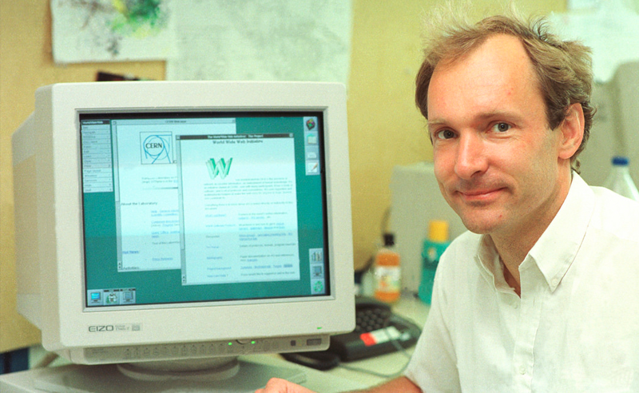
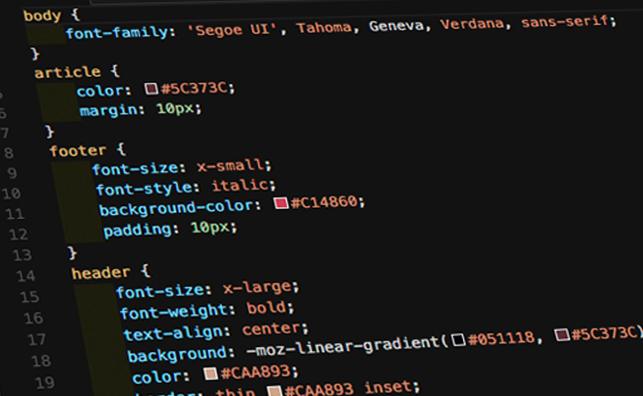
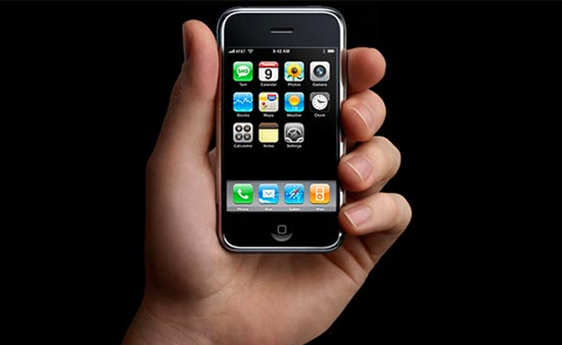
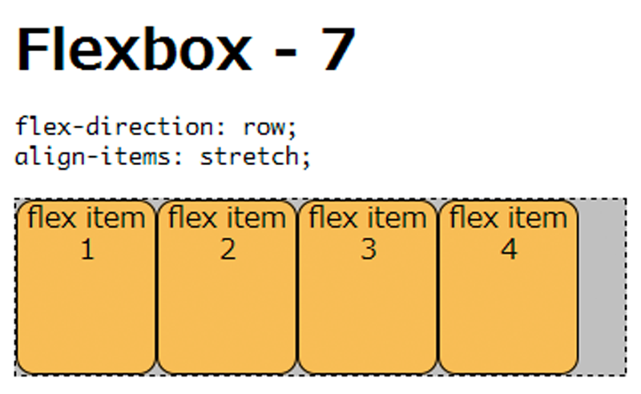

World Wide Web (WWW), dat ook wel internet genoemd wordt is een ruimte waar informatie van documenten en andere bronnen op het web worden geïdentificeerd door URL's (Uniform Resource Locators). WWW is in 1989 uitgevonden door Tim Berners-Lee.
HTTP (HyperText Transfer Protocol) wordt op het web gebruikt om gegevens te verzenden en te ontvangen. De gegevens zijn uniek doordat het geïdentificeerd wordt met een URL. Deze URL's indentificeren pagina's gemaakt van HTML.
HTML (HyperText Markup Language) is een SGML gebaseerde opmaaktaal voor de specificatie van documenten bedoeld voor op het WWW (World Wide Web). Dit is het standaard opmaaktaal voor webpagina's
CSS (Cascading Style Sheets) geeft de mogelijkheid om de vormgeving van webpagina's los te koppelen van hun feitelijke inhoud door het centraal vast te leggen. De CSS-informatie wordt toegvoegd aan HTML-code.
JavaScript is een veelgebruikte scripttaal om webpagina's interactief te maken en webapplicaties te ontwikkelen. Het script wordt door middel van HTML overgebracht in de webbrowser en wordt hierin uitgevoerd.
De release van Apple's Iphone in 2007 heeft een grote rol gespeeld in het gebied van webdesign op mobiele telefoons. Met de introductie van de Iphone konden smartphones HTML pagina's laden.
Flexbox is ontworpen als een eendimensionaal lay-outmodel en als een methode die ruimte tussen items in een interface en krachtige uitlijnmogelijkheden kan bieden. Dit kan handig zijn tijdens het maken van een HTML pagina met gebruik van CSS.
Ethan Marcotte besloot in 2010 om de bestaande aanpak uit te dagen door voor te stellen dezelfde inhoud te gebruiken, maar verschillende lay-outs voor het ontwerp, en bedacht de term Responsive web design.